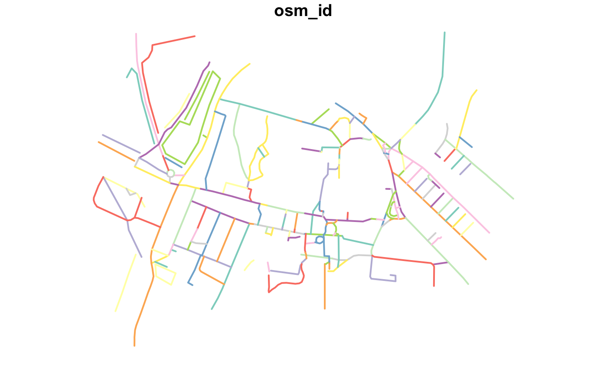
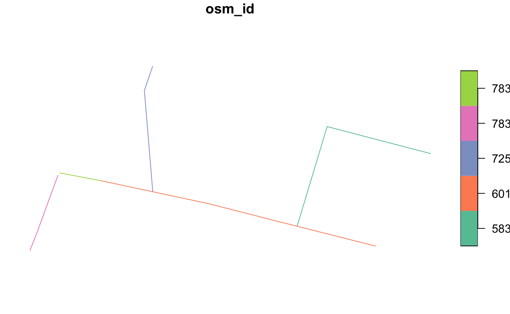

Main package functions
The packages is composed of the following main functions:
-
oe_providers(): Show which providers of OSM extracts are available; -
oe_match(): Match one input place with one of the files stored by the OSM providers; -
oe_download(): Download the chosen file; -
oe_vectortranslate(): Convert between.pbfand.gpkgformats; -
oe_read(): Read.pbfand.gpkgfiles; -
oe_get(): Match, download, translate and import data, all in one step.
For many users who just want to get OSM data quickly oe_get() may be sufficient, as covered in the README. We will demonstrate each function in turn.
oe_providers():list providers
oe_providers() lists the providers that are currently available with the version of osmextract you have installed.
oe_providers() #> Check the corresponding help pages to read more details about the fields in each database #> available_providers database_name number_of_zones number_of_fields #> 1 geofabrik geofabrik_zones 430 14 #> 2 bbbike bbbike_zones 235 10
Each element in the column database_name is a data object that is packaged with osmextract. You can read a detailed description of each provider data running, for example, ?geofabrik_zones or ?bbbike_zones.
Perhaps the best known bulk OSM data provider is Geofabrik, represented as data frame in the packaged object geofabrik_zones.
class(geofabrik_zones) #> [1] "sf" "data.frame"
Note that in addition to being a data frame with rows and columns, the object is also an sf object, as defined in the package of the same name. When working with sf objects it makes sense to have the package loaded:
That gives you access to many geographic functions for working with geographic vector data of the type provided by osmextract. Each row of data in an sf object contains a geometry, representing the area covered by each provider zone, meaning you can plot the data as follows:
par(mar = rep(0.1, 4)) plot(st_geometry(geofabrik_zones))

The plot above shows how the provider divides geographic space into discrete chunks. Different providers have other zoning systems.

As shown in the above visualisation of BBBike.org zones in Europe, the provider offers rectangular extracts of major cities. You can also download manually selected regions of interest from the BBBike website (see also https://github.com/ITSLeeds/osmextract/issues/100).
oe_match(): finding OSM extracts
oe_match() takes one character string representing a place and returns one matching zone based on the minimum Approximate String Distance (?adist) between the input place and the names of the zones of the provider. The matching is performed using the name field of the provider data and the default provider is Geofabrik. The function returns a named list with the URL and file size (in bytes) of the corresponding pbf file hosted by the provider, as shown below.
oe_match("Italy", provider = "geofabrik") #> $url #> [1] "https://download.geofabrik.de/europe/italy-latest.osm.pbf" #> #> $file_size #> [1] 1544340778 oe_match("Leeds", provider = "bbbike") #> $url #> [1] "https://download.bbbike.org/osm/bbbike/Leeds/Leeds.osm.pbf" #> #> $file_size #> [1] 19376705
There are several situations where it could be difficult to find the appropriate data source:
oe_match("Russia", quiet = FALSE) #> Warning: The input place was matched with multiple geographical zones: Asia - #> Austria - Tunisia. Selecting the first match. #> No exact matching found for place = Russia. Best match is Asia. #> Error: String distance between best match and the input place is 3, while the maximum threshold distance is equal to 1. You should increase the max_string_dist parameter, look for a closer match in the chosen provider database or consider using a different match_by variable.
We therefore enable search using alternative fields in the provider’s data that can be specified using the match_by parameter. For example, working with geofabrik_data, we implemented the possibility of looking for a match with iso3166-1 alpha2 codes:
oe_match("RU", match_by = "iso3166_1_alpha2") #> $url #> [1] "https://download.geofabrik.de/russia-latest.osm.pbf" #> #> $file_size #> [1] 2820253009 oe_match("US", match_by = "iso3166_1_alpha2") #> $url #> [1] "https://download.geofabrik.de/north-america/us-latest.osm.pbf" #> #> $file_size #> [1] 6982945396
The are a few cases where the iso3166-1 alpha2 codes in geofabrik_data do not work because there are no per-country extracts (e.g. Israel and Palestine):
oe_match("PS", match_by = "iso3166_1_alpha2") #> Warning: The input place was matched with multiple geographical zones: IS - LS #> - PK - PW - PG - PY - PE - PH - PL - PT - WS - RS - SS - ES - US - PR. Selecting #> the first match. #> Error: String distance between best match and the input place is 1, while the maximum threshold distance is equal to 0. You should increase the max_string_dist parameter, look for a closer match in the chosen provider database or consider using a different match_by variable. oe_match("IL", match_by = "iso3166_1_alpha2") #> Warning: The input place was matched with multiple geographical zones: AL - CL #> - GL - IS - IN - ID - IR - IQ - IE - IT - ML - NL - PL - SL. Selecting the first #> match. #> Error: String distance between best match and the input place is 1, while the maximum threshold distance is equal to 0. You should increase the max_string_dist parameter, look for a closer match in the chosen provider database or consider using a different match_by variable.
For this reason we also created a function that let you explore the matching variables according to a chosen pattern, for example:
oe_match_pattern("London") #> [1] "Greater London" oe_match_pattern("Russia") #> [1] "Russian Federation" oe_match_pattern("Palestine") #> [1] "Israel and Palestine" oe_match_pattern("US", match_by = "iso3166_2") #> [1] "US-AL" "US-AK" "US-AZ" "US-AR" "US-CA" "US-CO" "US-CT" "US-DE" "US-DC" #> [10] "US-FL" "US-GA" "US-HI" "US-ID" "US-IL" "US-IN" "US-IA" "US-KS" "US-KY" #> [19] "US-LA" "US-ME" "US-MD" "US-MA" "US-MI" "US-MN" "US-MS" "US-MO" "US-MT" #> [28] "US-NE" "US-NV" "US-NH" "US-NJ" "US-NM" "US-NY" "US-NC" "US-ND" "US-OH" #> [37] "US-OK" "US-OR" "US-PA" "US-PR" "US-RI" "US-SC" "US-SD" "US-TN" "US-TX" #> [46] "US-UT" "US-VT" "US-VA" "US-WA" "US-WV" "US-WI" "US-WY" oe_match_pattern("Washington", provider = "bbbike") #> [1] "WashingtonDC" israel_sf = oe_match_pattern("Israel", full_row = TRUE)
This information can be used for selecting the appropriate match:
oe_match("Greater London") #> $url #> [1] "https://download.geofabrik.de/europe/great-britain/england/greater-london-latest.osm.pbf" #> #> $file_size #> [1] 59746355
The function returns an error if the minimum approximate string distance between the input place and the closest match is greater than the parameter max_string_dist (which defaults to 1). You can always increase this value, but be aware that it can be be dangerous:
oe_match("Isle Wight") #> Error: String distance between best match and the input place is 3, while the maximum threshold distance is equal to 1. You should increase the max_string_dist parameter, look for a closer match in the chosen provider database or consider using a different match_by variable. oe_match("Isle Wight", max_string_dist = 3) #> $url #> [1] "https://download.geofabrik.de/europe/great-britain/england/isle-of-wight-latest.osm.pbf" #> #> $file_size #> [1] 6877468 oe_match("London", max_string_dist = 3, quiet = FALSE) #> The input place was matched with: Jordan #> $url #> [1] "https://download.geofabrik.de/asia/jordan-latest.osm.pbf" #> #> $file_size #> [1] 27400228
The parameter max_string_dist is set equal to 0 if match_by is equal to iso3166_1_alpha2 or iso3166_2 to avoid matching with the wrong iso3166 code.
The function returns a warning message if there are multiple zones equidistant (according to approximate string distance) from the input place. In that case, it selects the first match:
oe_match("Belin") #> Warning: The input place was matched with multiple geographical zones: Benin - #> Berlin. Selecting the first match. #> $url #> [1] "https://download.geofabrik.de/africa/benin-latest.osm.pbf" #> #> $file_size #> [1] 34426444
Finding zones based on geographic inputs
The input place can be also specified using an sfc_POINT object with arbitrary CRS as documented in the following example. The function will return a zone intersecting the sfc_POINT object (or an error, if the input point does not intersect any area). If the input place intersects multiple geographically nested zones, the function returns the area with the highest level. Check the help page of ?geofabrik_zones to understand the meaning of the level field. If there are multiple matches within the same level, then oe_match() function will return the area whose centroid is closest to the input place.
milan_duomo = sf::st_sfc(sf::st_point(c(1514924, 5034552)), crs = 3003) oe_match(milan_duomo) #> although coordinates are longitude/latitude, st_intersects assumes that they are planar #> $url #> [1] "https://download.geofabrik.de/europe/italy/nord-ovest-latest.osm.pbf" #> #> $file_size #> [1] 416306623
The input place can be also specified using a numeric vector of coordinates. In that case the CRS is assumed to be 4326:
oe_match(c(9.1916, 45.4650)) # Duomo di Milano using EPSG: 4326 #> although coordinates are longitude/latitude, st_intersects assumes that they are planar #> $url #> [1] "https://download.geofabrik.de/europe/italy/nord-ovest-latest.osm.pbf" #> #> $file_size #> [1] 416306623
To reduce unnecessary computational resources and save bandwidth/electricity, we will use a small OSM extract in subsequent sections that can be found as follows:
its_details = oe_match("ITS Leeds", provider = "test") its_details #> $url #> [1] "https://github.com/ITSLeeds/osmextract/raw/master/inst/its-example.osm.pbf" #> #> $file_size #> [1] 40792
oe_download(): download OSM data
The purpose of oe_download() is to download .pbf files representing OSM extracts. The function takes a URL as input and downloads the file in the directory specified by the parameter download_directory:
oe_download( file_url = its_details$url, file_size = its_details$file_size, provider = "test", download_directory = "." )
The argument provider can be omitted if the input url is associated with one of the regular providers (such as Geofabrik or Bbbike). The default value for download_directory is tempdir(), but, if you want to set a directory that will persist, you can add OSMEXT_DOWNLOAD_DIRECTORY=/path/for/osm/data in your .Renviron file, e.g. with:
usethis::edit_r_environ() # Add a line containing: OSMEXT_DOWNLOAD_DIRECTORY=/path/to/save/files
You can always check the default download_directory used by oe_download() with:
oe_download_directory() #> [1] "/var/folders/24/8k48jl6d249_n_qfxwsl6xvm0000gn/T//RtmpNy41bb"
We strongly advise you setting a persistent directory since downloading and converting (see the next sub-section) .pbf file are expensive operations, that are skipped by oe_*() functions if they detect that the input .pbf file was already downloaded and/or converted.
More precisely, oe_download() runs several checks before actually downloading a new file, to avoid overloading the OSM providers. The first step when running the function is the definition of the file’s path associated with the input file_url where the .pbf file will be saved. The path is created by pasting together the download_directory, the name of chosen provider, specified by provider argument or inferred from the input url, and the basename() of the url. For example, if file_url = "https://download.geofabrik.de/europe/italy-latest.osm.pbf", and download_directory = "/tmp/, then the path is built as /tmp/geofabrik_italy-latest.osm.pbf. Then, the function checks if there exists a file with the same path and, in that case, it returns the path without downloading anything. The parameter force_download is used to modify this behaviour. If there is no file associated with the file path, then the function downloads a new file using download.file() with destfile equal to the new path and mode = "wb". Then it returns the path.
oe_vectortranslate(): convert to gpkg format
oe_vectortranslate() function was defined to translate a .pbf file into .gpkg format. The new .gpkg file is created in the same directory as the input .pbf file. The conversion is performed using ogr2ogr through vectortranslate utility in sf::gdal_utils(). It was created following the suggestions of the maintainers of GDAL.
Let’s start with an example. First we download the .pbf file associated with the ITS test file:
its_pbf = oe_download(its_details$url, provider = "test") list.files(oe_download_directory(), pattern = "pbf|gpkg") #> [1] "test_its-example.osm.pbf"
and then we convert it to .gpkg format:
its_gpkg = oe_vectortranslate(its_pbf) list.files(oe_download_directory(), pattern = "pbf|gpkg") #> [1] "test_its-example.gpkg" "test_its-example.osm.pbf"
The translation process is performed using the vectortranslate utility in sf::gdal_utils(). This operation can be customized in several ways modifying the parameters layer, extra_tags, osmconf_ini, and vectortranslate_options.
layer
The .pbf files processed using GDAL are usually categorized into 5 layers, named points, lines, multilinestrings, multipolygons and other_relations. Check the first paragraphs here for more details. The oe_vectortranslate() function can covert only one later at a time, and the parameter layer is used to specify which layer of the .pbf file should be converted into .gpkg. Several layers with different names can be stored in the same .gpkg file. By default, the function will convert the lines layer (which is the most common one according to our experience).
So, for example,
st_layers(its_pbf, do_count = TRUE) #> Driver: OSM #> Available layers: #> layer_name geometry_type features fields #> 1 points Point 186 10 #> 2 lines Line String 189 9 #> 3 multilinestrings Multi Line String 10 4 #> 4 multipolygons Multi Polygon 104 25 #> 5 other_relations Geometry Collection 3 4
while
st_layers(its_gpkg, do_count = TRUE) #> Driver: GPKG #> Available layers: #> layer_name geometry_type features fields #> 1 lines Line String 189 9
but we can add another layer:
its_gpkg = oe_vectortranslate(its_pbf, layer = "points") st_layers(its_gpkg, do_count = TRUE) #> Driver: GPKG #> Available layers: #> layer_name geometry_type features fields #> 1 lines Line String 189 9 #> 2 points Point 186 10
vectortranslate_options
The parameter vectortranslate_options is used to control the arguments that are passed to ogr2ogr via sf::gdal_utils() when converting between .pbf and .gpkg formats. ogr2ogr can perform various operations during the conversion process, such as spatial filters or SQL queries. These operations are determined by the vectortranslate_options argument. If NULL (default value), then vectortranslate_options is set equal to c("-f", "GPKG", "-overwrite", "-oo", paste0("CONFIG_FILE=", osmconf_ini), "-lco", "GEOMETRY_NAME=geometry", layer). Explanation:
-
"-f", "GPKG"says that the output format isGPKG; -
"-overwriteis used to delete an existing layer and recreate it empty; -
"-oo", paste0("CONFIG_FILE=", osmconf_ini)is used to set the Open Options for the.osm.pbffile and change theCONFIGfile (in case the user asks for any extra tag or a totally different CONFIG file); -
"-lco", "GEOMETRY_NAME=geometry"is used to change the layer creation options for the.gpkgfile and modify the name of the geometry column; -
layerindicates which layer should be converted.
Check the following sections to see a few examples with different vectortranslate options. It should be immediately noted that the arguments that are passed to vectortranslate_options can be used to perform queries during the vectortranslate process, which is extremely useful for large .pbf files.
Other notes
By default, the vectortranslate operations are skipped if the function detects a file having the same path as the input file, .gpkg extension and a layer with the same name as the parameter layer with all extra_tags. In that case the function will simply return the path of the .gpkg file. This behaviour can be overwritten by setting force_vectortranslate = TRUE. If osmconf_ini or vectortranslate_options parameters are not NULL, the vectortranslate operations are never skipped.
oe_read(): read-in OSM data
The oe_read() function is wrapper around oe_download(), oe_vectortranslate(), and sf::st_read(). It is used for reading-in a .pbf or .gpkg file that is specified using its path or its url.
So, for example, the following code can be used for reading-in the its-gpkg file:
oe_read(its_pbf, quiet = FALSE) #> The corresponding gpkg file was already detected. Skip vectortranslate operations. #> Reading layer `lines' from data source `/private/var/folders/24/8k48jl6d249_n_qfxwsl6xvm0000gn/T/RtmpNy41bb/test_its-example.gpkg' using driver `GPKG' #> Simple feature collection with 189 features and 11 fields #> geometry type: LINESTRING #> dimension: XY #> bbox: xmin: -1.562458 ymin: 53.80471 xmax: -1.548076 ymax: 53.81105 #> geographic CRS: WGS 84
The vectortranslate operations can be skipped with the parameter skip_vectortranslate:
oe_read(its_pbf, skip_vectortranslate = TRUE, quiet = FALSE) #> Reading layer `lines' from data source `/private/var/folders/24/8k48jl6d249_n_qfxwsl6xvm0000gn/T/RtmpNy41bb/test_its-example.osm.pbf' using driver `OSM' #> Simple feature collection with 189 features and 9 fields #> geometry type: LINESTRING #> dimension: XY #> bbox: xmin: -1.562458 ymin: 53.80471 xmax: -1.548076 ymax: 53.81105 #> geographic CRS: WGS 84
We can see that the second example includes 9 fields (the default tags) while the first example includes 11 fields (the default tags + bicycle and foot, that were added a few chunks above).
We can also read from a URL:
my_url = "https://github.com/ITSLeeds/osmextract/raw/master/inst/its-example.osm.pbf" oe_read(my_url, provider = "test", quiet = FALSE, force_download = TRUE, force_vectortranslate = TRUE) #> File downloaded! #> Start with the vectortranslate operations on the input file! #> Finished the vectortranslate operations on the input file! #> Reading layer `lines' from data source `/private/var/folders/24/8k48jl6d249_n_qfxwsl6xvm0000gn/T/RtmpNy41bb/test_its-example.gpkg' using driver `GPKG' #> Simple feature collection with 189 features and 9 fields #> geometry type: LINESTRING #> dimension: XY #> bbox: xmin: -1.562458 ymin: 53.80471 xmax: -1.548076 ymax: 53.81105 #> geographic CRS: WGS 84
Please note that if you reading from a URL which is not linked to one of the supported providers, you need to specify the provider parameter. The test_its-example.osm.pbf file already exists in the download_directory but we forced the download and vectortranslate operations.
oe_get(): Do it all in one step
To simplify the steps outlined above, while enabling modularity if needs be, we packaged them all into a single function that works as follows:
its_lines = oe_get("ITS Leeds", provider = "test", quiet = FALSE) #> The input place was matched with: ITS Leeds #> The chosen file was already detected in the download directory. Skip downloading. #> The corresponding gpkg file was already detected. Skip vectortranslate operations. #> Reading layer `lines' from data source `/private/var/folders/24/8k48jl6d249_n_qfxwsl6xvm0000gn/T/RtmpNy41bb/test_its-example.gpkg' using driver `GPKG' #> Simple feature collection with 189 features and 9 fields #> geometry type: LINESTRING #> dimension: XY #> bbox: xmin: -1.562458 ymin: 53.80471 xmax: -1.548076 ymax: 53.81105 #> geographic CRS: WGS 84 plot(its_lines["osm_id"], lwd = 2)

The function oe_get() is a wrapper around oe_match() and oe_read() and it summarizes the algorithm that we use for importing OSM extracts:
- Match the input
placewith the url of a.pbffile throughoe_match(); - Download the corresponding
.pbffile usingoe_download(); - Convert it into
.gpkgformat usingoe_vectortranslate(); - Read-in the
.gpkgfile usingsf::st_read().
The following commands (not evaluated here) show how oe_get() can be used to import the OSM extracts associated with the desired input place, after downloading the .pbf file and performing the vectortranslate operations. We suggest you running the commands and check the output.
oe_get("Andorra", quiet = FALSE) oe_get("Leeds", provider = "bbbike", quiet = FALSE) oe_get("Malta", layer = "points", quiet = FALSE) oe_get("RU",match_by = "iso3166_1_alpha2", quiet = FALSE) oe_get("Andorra", download_only = TRUE) oe_get_keys(oe_get("Andorra", download_only = TRUE)) oe_get("Andorra", extra_tags = c("maxspeed", "oneway", "ref", "junction"), quiet = FALSE) oe_get("Andora", stringsAsFactors = FALSE, quiet = TRUE, as_tibble = TRUE) # like read_sf
The arguments osmconf_ini, vectortranslate_options and query (defined in sf::st_read) can be used to further optimize the process of getting OSM extracts into R.
osmconf_ini
The following example shows how to create an ad-hoc osmconf.ini file, which is used by GDAL to read a .pbf file in a customized way. First of all, we load a local copy of the default osmconf.ini file, taken from here.
custom_osmconf_ini = readLines(system.file("osmconf.ini", package = "osmextract"))
Then we modify the code at lines 18 and 21, setting the parameters for reporting all nodes and ways even without any significant tag,
custom_osmconf_ini[[18]] = "report_all_nodes=yes" custom_osmconf_ini[[21]] = "report_all_ways=yes"
and the code at lines 45 and 53, removing the osm_id field and changing the default attributes:
custom_osmconf_ini[[45]] = "osm_id=no" custom_osmconf_ini[[53]] = "attributes=highway,lanes"
Another important parameter that can be customized creating an ad-hoc osmconf.ini file is closed_ways_area_polygons (see lines 5-7 of the default CONFIG file). We can now save the custom_osmconf_ini file:
temp_ini = tempfile(fileext = ".ini") writeLines(custom_osmconf_ini, temp_ini)
and read the ITS Leeds file with the new osmconf.ini file:
oe_get("ITS Leeds", provider = "test", osmconf_ini = temp_ini, quiet = FALSE) #> The input place was matched with: ITS Leeds #> The chosen file was already detected in the download directory. Skip downloading. #> Start with the vectortranslate operations on the input file! #> Finished the vectortranslate operations on the input file! #> Reading layer `lines' from data source `/private/var/folders/24/8k48jl6d249_n_qfxwsl6xvm0000gn/T/RtmpNy41bb/test_its-example.gpkg' using driver `GPKG' #> Simple feature collection with 191 features and 4 fields #> geometry type: LINESTRING #> dimension: XY #> bbox: xmin: -1.562458 ymin: 53.80471 xmax: -1.548076 ymax: 53.81105 #> geographic CRS: WGS 84
If we compare it with the default output:
oe_get("ITS Leeds", provider = "test", quiet = FALSE, force_vectortranslate = TRUE) #> The input place was matched with: ITS Leeds #> The chosen file was already detected in the download directory. Skip downloading. #> Start with the vectortranslate operations on the input file! #> Finished the vectortranslate operations on the input file! #> Reading layer `lines' from data source `/private/var/folders/24/8k48jl6d249_n_qfxwsl6xvm0000gn/T/RtmpNy41bb/test_its-example.gpkg' using driver `GPKG' #> Simple feature collection with 189 features and 9 fields #> geometry type: LINESTRING #> dimension: XY #> bbox: xmin: -1.562458 ymin: 53.80471 xmax: -1.548076 ymax: 53.81105 #> geographic CRS: WGS 84
we can see that there are 3 extra features in the sf object that was read-in using the customized CONFIG file (since we set "report_all_nodes=yes" and "report_all_ways=yes") and just 4 field: i.e. highway, lanes, (see the code a few chunks above), z_order (see here), and other_tags.
vectortranslate_options
The parameter vectortranslate_options is used to modify the options that are passed to ogr2ogr. This is extremely important because if we tune the options of vectortranslate_options parameter, then we can analyze small parts of enormous .pbf files without fully reading them in memory.
The first example is reported in the following chunk of code and it shows how to use the argument -t_srs to modify the CRS of the output .gpkg object (from EPSG:4326 to EPSG:27700) while performing vectortranslate operations:
my_osmconf_ini = system.file("osmconf.ini", package = "osmextract") my_vectortranslate = c( "-f", "GPKG", #output file format "-overwrite", # overwrite an existing layer "-oo", paste0("CONFIG_FILE=", my_osmconf_ini), # open options "-lco", "GEOMETRY_NAME=geometry", # layer creation options, "-t_srs", "EPSG:27700", # British National Grid CRS "lines" #layer ) # Check the CRS oe_get("ITS Leeds", provider = "test", vectortranslate_options = my_vectortranslate, quiet = FALSE) #> The input place was matched with: ITS Leeds #> The chosen file was already detected in the download directory. Skip downloading. #> Start with the vectortranslate operations on the input file! #> Finished the vectortranslate operations on the input file! #> Reading layer `lines' from data source `/private/var/folders/24/8k48jl6d249_n_qfxwsl6xvm0000gn/T/RtmpNy41bb/test_its-example.gpkg' using driver `GPKG' #> Simple feature collection with 189 features and 9 fields #> geometry type: LINESTRING #> dimension: XY #> bbox: xmin: 428911.1 ymin: 434356.9 xmax: 429858.1 ymax: 435067 #> projected CRS: OSGB 1936 / British National Grid
The next example demonstrates that it’s possible to apply an SQL-like query during the vectortranslate process. More precisely, we can use the arguments -select and -where to create an SQL-like query that is applied during the vectortranslate process. First of all we need to build a character vector with the options that will be passed to ogr2ogr:
my_osmconf_ini = system.file("osmconf.ini", package = "osmextract") my_vectortranslate = c( "-f", "GPKG", #output file format "-overwrite", # overwrite an existing file "-oo", paste0("CONFIG_FILE=", my_osmconf_ini), # open options "-lco", "GEOMETRY_NAME=geometry", # layer creation options, "-t_srs", "EPSG:27700", # British National Grid CRS # SQL-like query where we select only a few fields "-select", "osm_id,highway", # SQL-like query where we select only the features where highway in (footway, cycleway) "-where", "highway IN ('footway', 'cycleway')", "lines" #layer )
and then we can process the file: :
its_leeds = oe_get( "ITS Leeds", provider = "test", vectortranslate_options = my_vectortranslate ) its_leeds #> Simple feature collection with 76 features and 2 fields #> geometry type: LINESTRING #> dimension: XY #> bbox: xmin: 428932.4 ymin: 434479.2 xmax: 429673.2 ymax: 435059.5 #> projected CRS: OSGB 1936 / British National Grid #> First 10 features: #> osm_id highway geometry #> 1 4371081 footway LINESTRING (429066.9 434784... #> 2 4371084 cycleway LINESTRING (429091.8 434741... #> 3 4419868 footway LINESTRING (429013 434780.2... #> 4 6962430 footway LINESTRING (429421.4 434797... #> 5 6962433 footway LINESTRING (429239.5 434903... #> 6 6962435 footway LINESTRING (429301.7 434875... #> 7 6962457 footway LINESTRING (429286.2 434678... #> 8 22951913 footway LINESTRING (429390.3 434611... #> 9 22951916 footway LINESTRING (429389 434589.4... #> 10 23000232 footway LINESTRING (429441.5 434527...
The same procedure can be repeated using an ad-hoc osmconf.ini file and extra tags. These arguments are extremely important if you need to work with a small portion of a bigger .pbf file. For example, the following code (not run in the vignette) is used to extract all primary, secondary and tertiary roads from the .pbf file of Portugal stored by Geofabrik servers.
It takes approximately 170 seconds to run on an HP ENVY Notebook with Intel i7-7500U processor and 8GB of RAM running Windows 10:
my_osmconf_ini = system.file("osmconf.ini", package = "osmextract") my_vectortranslate = c( "-f", "GPKG", #output file format "-overwrite", # overwrite an existing file "-oo", paste0("CONFIG_FILE=", my_osmconf_ini), # open options "-lco", "GEOMETRY_NAME=geometry", # layer creation options, "-t_srs", "EPSG:27700", # British National Grid CRS # SQL-like query where we select only the features where highway in (primary, secondary, tertiary) "-where", "highway IN ('primary', 'secondary', 'tertiary')", "lines" #layer ) system.time({ portugal1 = oe_get("Portugal", vectortranslate_options = my_vectortranslate, quiet = FALSE) }) #> user system elapsed #> 96.30 58.97 166.75
while the classical approach (not run in the vignette) is slower and it provides identical results:
system.time({ portugal2 = oe_get("Portugal", quiet = FALSE, force_download = TRUE, force_vectortranslate = TRUE) portugal2 = portugal2 %>% dplyr::filter(highway %in% c('primary', 'secondary', 'tertiary')) }) #> user system elapsed #> 210.84 76.09 302.89 nrow(portugal1) == nrow(portugal2) #> TRUE
The last example shows how to use the argument -clipsrc to clip the input layer using a bounding box or a polygon (defined as WKT, see sf::st_as_text()). First I defined a polygon centered in the area around ITS Leeds and create its WKT representation
# Define a really small POLYGON in the area of ITS Leeds its_small_poly = st_sfc( st_polygon( list( rbind( c(-1.559184, 53.807739), c(-1.557895, 53.807571), c(-1.557375, 53.808094), c(-1.558524, 53.808192), c(-1.559184, 53.807739) ) ) ) ) its_small_wkt = st_as_text(its_small_poly)
then I define the vectortranslate_options
my_osmconf_ini = system.file("osmconf.ini", package = "osmextract") my_vectortranslate = c( "-f", "GPKG", #output file format "-overwrite", # overwrite an existing file "-oo", paste0("CONFIG_FILE=", my_osmconf_ini), # open options "-lco", "GEOMETRY_NAME=geometry", # layer creation options "-clipsrc", its_small_wkt, "lines" #layer )
and run oe_get():
its_small_sf = oe_get( "ITS Leeds", provider = "test", vectortranslate_options = my_vectortranslate, quiet = FALSE ) #> The input place was matched with: ITS Leeds #> The chosen file was already detected in the download directory. Skip downloading. #> Start with the vectortranslate operations on the input file! #> Finished the vectortranslate operations on the input file! #> Reading layer `lines' from data source `/private/var/folders/24/8k48jl6d249_n_qfxwsl6xvm0000gn/T/RtmpNy41bb/test_its-example.gpkg' using driver `GPKG' #> Simple feature collection with 5 features and 9 fields #> geometry type: LINESTRING #> dimension: XY #> bbox: xmin: -1.559064 ymin: 53.80772 xmax: -1.55752 ymax: 53.80814 #> geographic CRS: WGS 84 plot(its_small_sf["osm_id"])

If you compare this plot with the figure at the beginning of this Subsection, you can see that it represents a small part of the streets in the middle-left of the plot.
This approach is faster than translating, reading and applying a spatial filter to a full .pbf file, especially for larger areas. For example (not run in the vignette):
# Define a 15Km circular buffer around Rome rome_buffer = st_sfc(st_buffer(st_point(c(291187, 4640996)), 15000), crs = 32633) %>% st_transform(crs = 4326) # vectortranslate approach system.time({ rome_buffer_wkt = st_as_text(rome_buffer) my_osmconf_ini = system.file("osmconf.ini", package = "osmextract") my_vectortranslate = c( "-f", "GPKG", #output file format "-overwrite", # overwrite an existing file "-oo", paste0("CONFIG_FILE=", my_osmconf_ini), # open options "-lco", "GEOMETRY_NAME=geometry", # layer creation options "-clipsrc", rome_buffer_wkt, "lines" #layer ) rome1 = oe_get( st_sfc(st_point(c(291187, 4640996)), crs = 32633), force_download = TRUE, quiet = FALSE, vectortranslate_options = my_vectortranslate ) }) #> user system elapsed #> 109.26 110.10 274.10 # Classical approach system.time({ center_italy = oe_get( st_sfc(st_point(c(291187, 4640996)), crs = 32633), quiet = FALSE, force_download = TRUE, force_vectortranslate = TRUE ) rome2 = center_italy[rome_buffer, ] }) #> user system elapsed #> 207.78 90.58 322.94
Please notice the following warning message that may be returned by ogr2ogr with argument -clipsrc:
Warning message:
In CPL_gdalvectortranslate(source, destination, options, oo, doo) :
GDAL Message 1: A geometry of type MULTILINESTRING is inserted into layer lines of geometry type LINESTRING, which is not normally allowed by the GeoPackage specification, but the driver will however do it. To create a conformant GeoPackage, if using ogr2ogr, the -nlt option can be used to override the layer geometry type. This warning will no longer be emitted for this combination of layer and feature geometry type.
query
The main drawback of the vectortranslate approach is that you need to rerun the ogr2ogr utility every time you change your query. This is probably the optimal approach if you are working with very big .pbf files (like continent-scale), but, if you are dealing with smaller data, the easier (and perhaps faster) solution may be converting all the fields and all the features from the .pbf file into .gpkg format and then using the query parameter of sf::st_read(). See here for more details on the SQL dialect.
For example, the following code is used to calculate the values stored in the highway column for the ITS test data:
oe_get( "ITS Leed", provider = "test", query = "SELECT DISTINCT highway FROM \"lines\"", force_vectortranslate = TRUE # Clean the spatial query applied by previous chunks ) #> highway #> 1 footway #> 2 cycleway #> 3 service #> 4 residential #> 5 trunk #> 6 steps #> 7 unclassified #> 8 track #> 9 pedestrian #> 10 trunk_link #> 11 tertiary #> 12 <NA> #> 13 corridor
The same query argument can be used to read-in only certain features, like all residential highways:
oe_get( "ITS Leeds", provider = "test", quiet = FALSE, query = "SELECT * FROM 'lines' WHERE highway IN ('residential')" ) #> The input place was matched with: ITS Leeds #> The chosen file was already detected in the download directory. Skip downloading. #> The corresponding gpkg file was already detected. Skip vectortranslate operations. #> Reading layer `lines' from data source `/private/var/folders/24/8k48jl6d249_n_qfxwsl6xvm0000gn/T/RtmpNy41bb/test_its-example.gpkg' using driver `GPKG' #> Simple feature collection with 21 features and 9 fields #> geometry type: LINESTRING #> dimension: XY #> bbox: xmin: -1.561712 ymin: 53.80541 xmax: -1.548076 ymax: 53.80988 #> geographic CRS: WGS 84
Again, this is faster (check the following chunk of code, not evaluated in the vignette) and less memory intensive than reading-in the whole dataset and filtering with R. Computational efficiency is important when working with large OSM datasets provided by the package.
system.time({ portugal1 = oe_get( "Portugal", quiet = FALSE, force_download = TRUE, force_vectortranslate = TRUE, query = "SELECT * from 'lines' WHERE highway IN ('primary', 'secondary', 'tertiary')" ) }) #> user system elapsed #> 71.17 39.57 135.22 system.time({ portugal2 = oe_get( "Portugal", quiet = FALSE, force_download = TRUE, force_vectortranslate = TRUE, ) portugal2 = portugal2 %>% dplyr::filter(highway %in% c('primary', 'secondary', 'tertiary')) }) #> user system elapsed #> 116.05 44.28 190.00
Last but not least, we can use the function hstore_get_value to extract one of the tags saved in the other_tags column without using ogr2ogr and rerunning the oe_vectortranslate() function::
# No extra tag colnames(oe_get("ITS Leeds", provider = "test")) #> [1] "osm_id" "name" "highway" "waterway" "aerialway" #> [6] "barrier" "man_made" "z_order" "other_tags" "geometry" # One extra tag oe_get_keys(oe_get("ITS Leeds", provider = "test", download_only = TRUE)) #> [1] "bicycle" "foot" "website" #> [4] "access" "lanes" "oneway" #> [7] "lit" "maxspeed" "ref" #> [10] "turn:lanes" "service" "surface" #> [13] "motor_vehicle" "source:name" "lanes:psv" #> [16] "lanes:backward" "lanes:forward" "lanes:psv:backward" #> [19] "turn:lanes:forward" "covered" "layer" #> [22] "lcn" "natural" "step_count" #> [25] "frequency" "operator" "power" #> [28] "source:geometry" "substation" "voltage" #> [31] "tunnel" "indoor" "level" #> [34] "maxheight" "incline" "bridge" #> [37] "alt_name" "turn:lanes:backward" colnames(oe_get( "ITS Leeds", provider = "test", query = "SELECT *, hstore_get_value(other_tags, 'bicycle') AS bicycle FROM lines" )) #> [1] "osm_id" "name" "highway" "waterway" "aerialway" #> [6] "barrier" "man_made" "z_order" "other_tags" "bicycle" #> [11] "geometry"